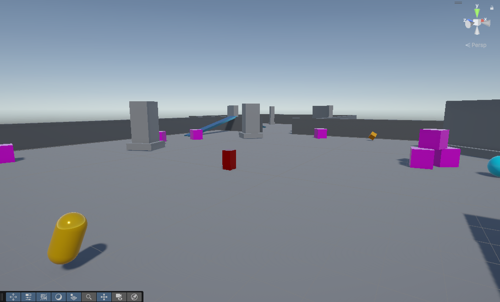
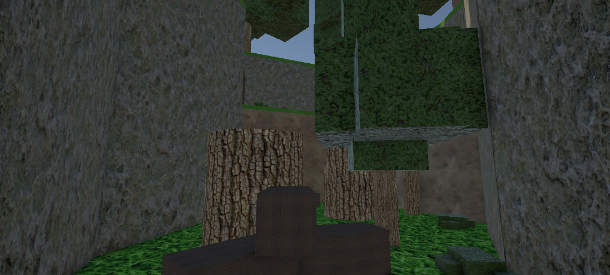
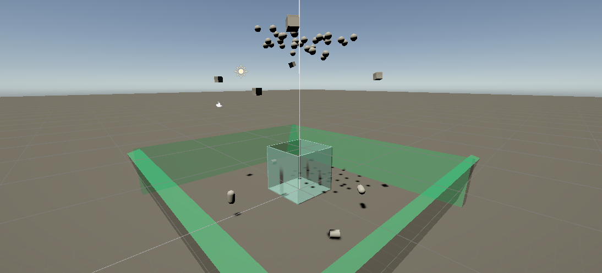
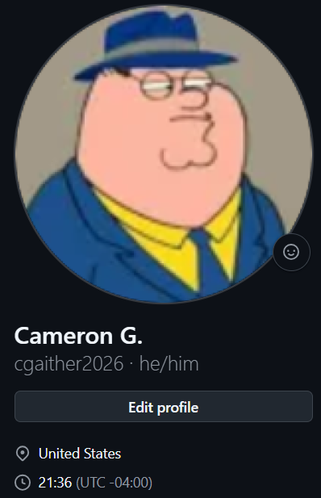
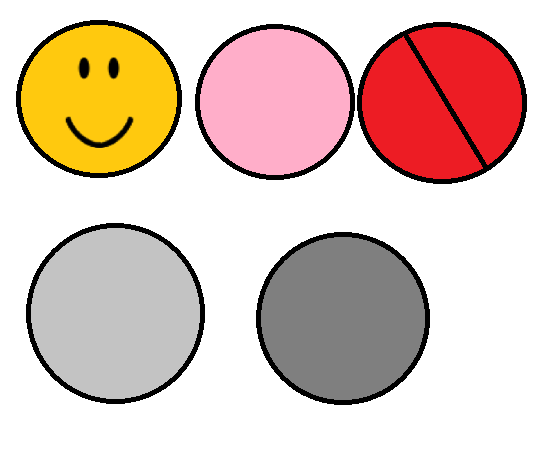

Working with Unity for the first time was not very complex to learn, with previous experiences through Roblox Studio and even 2D platform editors like BattleBlock Theatre it was pretty easy to get a grasp at the controls and to create a simple game with the aid of my instructor for the coding and other technical aspects about Unity.
I contributed to this game by coming up with unique ideas for this project to stand out from other classmates' Rollaball projects by adding another collectable, making more obstacles in the map, and general tweaking at the time.

Created this project as my magnum-opus project, creating code mostly conjured by myself with assistance along the way, expansive maps that players have to escape before deadly water trickles in and drowns them all, and objectives such as pressing buttons to open up new paths.
I contributed to this game by writing up most of its coding, using my knowledge of general coding with Luau, which made it easier to adapt to understanding C#'s language.

This project was made for an assignment in my class, taking a simple base Unity project and adding a unique trait to the game that gives it a unique personality. I made the objective of this game be collecting and piling all the loose objects scattered about the playing field and dropping them into the box, which adds/subtracts from the counter at the bottom-left of the player's screen.
I contributed to this game by writing up custom code for the player to fly around, pick-up & drop objects, and made it so the counter also decrements if an object is removed from the box, and made it so it doesn't count the player if they go into the box.

If you wish to keep in touch with my future endeavors, you can go to my GitHub account by clicking anywhere on the image below!

Working with my classmates on the first game of my technical institute's year was very fun to help design and lend ideas on for both myself, and for my classmates who each were working on different aspects of the game, and being able to design token skin ideas, alongside coming up with some of the features was very memorable and fun to do.
